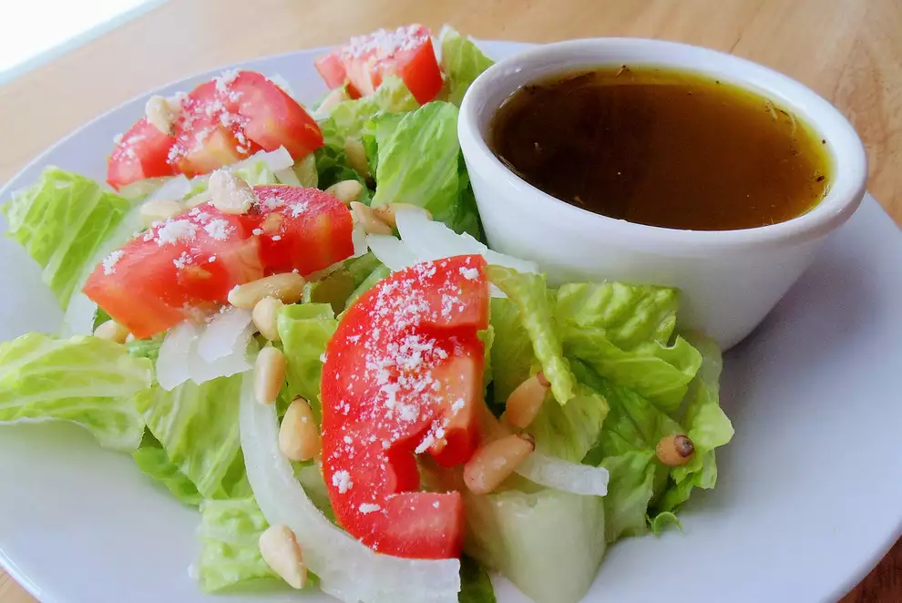

Salad Recipe

A simple healthy salad
- 1 cucumber
- 1 head iceberg lettuce, cut into bite-sized pieces
- 1 head romaine, cut into bite-sized pieces
- 4 plum tomatoes, cut into wedges
- 1/2 head chicory, cut into bite-sized pieces
- 1/2 cup extra-virgin olive oil, or to taste
- 3 tablespoons balsamic vinegar, or to taste
- 1 teaspoon Italian seasoning
- 1 teaspoon lemon juice
- 1/2 teaspoon celery seed
- 1/2 teaspoon garlic salt
- 1/8 teaspoon ground black pepper
- 1/8 teaspoon ground ginger
- 1/4 cup pignoli (pine nuts) (Optional)
- 1/4 cup freshly grated Parmesan cheese
-
Run a fork down the length of the cucumber to create thin stripes. Cut cucumber into thin slices.
-
Mix cucumber, iceberg lettuce, romaine, tomatoes, and chicory together in a large bowl. Add olive oil and balsamic vinegar; toss to coat. Season with Italian seasoning, lemon juice, celery seed, garlic salt, pepper, and ginger.
-
Garnish salad with pignoli and Parmesan cheese.